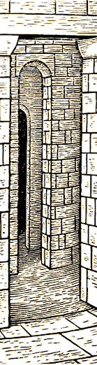

The Skotos Proximity System(See also article http://www.skotos.net/articles/chezskoot.html) A Sense of PlaceCharacterization and a Sense of Place In fiction offering a sense of place is an important part of the author's craft. Most writing instructors suggest giving the reader a distinct sense of place and time in the opening paragraph if not the first sentence. If a writer fails to do so, the reader can be confused. Without a location to anchor him, a reader will be unable to envision either the characters inhabiting that location or the actions they engage in. When multiple characters are involved, it is also important to explain how characters are positioned relative to another. This not only gives the reader a better sense of place, but also offers characterization. As an example, notice the sense of place in the opening sentence of Dashiel Hammett's The Thin Man:
In this introduction we discover the protagonist is quite comfortable lounging in an illegal bar, probably in the twenties, in some large urban city in the USA. He has a girlfriend or wife that is wandering elsewhere, and he isn't too worried about being separated from her. A young woman, socializing with others, notices him, though he's doing nothing in particular to attract attention, and goes over to him. You already know that she wants to speak to him. This paragraph gives a remarkable sense of place and of characterization in just a few words. Interactivity and Problems of Place In multiplayer interactive fiction, a basic sense of place is easy. Either the player exists in a room that can be examined or the player exists in a scene that will be described as he takes actions. However, multiplayer interactive fiction does a poor job of integrating that sense of place with other players in the game. This probably comes from multiplayer interactive fiction's roots in single player games like Adventure and Zork , where there is truly only one significant and realistic character--the player. At Infocom's height, the best NPC were just a notch above a puzzle--not truly a character. In multiplayer interactive fiction, everyone is significant, and everyone passes the Turing test (well, almost). So we need to find a way to describe a player's interaction with his environment and with other players, in a fashion that is significant to characterization. The locale has been described, but how does the player fit in? Is he comfortably leaning against a wall, resting at a table with his head in his arms, or nervously standing at the door, waiting for someone? When someone else arrives, how does he react? How does he show his interest or lack of interest? Problems solved by the Skotos Proximity System Skotos solves some of the problems of characterization and a sense of place through a technique we call "Proximity". With the Skotos Proximity System, combined with our Skotos Expression System (see the Technical Summary), a player can be near a door, sit at a table, pray before the altar, or kneel in front of his bride. The proximity system also solves other problems. If someone approaches you to kiss you, you have an opportunity to retreat before the kiss is completed. If you drop something, it is close to you and someone else will have to be just as close before they can pick it up. If you are sitting at a table, you will not notice other people in the room unless they are shouting, or unless you decide to pay particular attention. Summary of the Skotos Proximity SystemThe Skotos Proximity System creates proxes, or proximities, which qualify associations between objects.
The Prox A prox (short for proximity) is a distinct association between two objects that describes the spatial relationship between those two objects. It always includes a preposition (on, near, in, etc.) and a vector. Example: spoon->ON->table In this case the preposition is on and the vector is from the spoon to the table. In this situation, the spoon is described as "The spoon is on the table" and the table is described as "The table has a spoon on it." The spoon is considered to be a "child" of the table, and the table is considered to be the "parent" of the spoon. The vector from the spoon to the table (i.e. child to parent) is considered "up", and the reverse vector from the table to the spoon (i.e. parent to child) is considered "down". Prox Chains If you choose an object, find its parent (there can only be one), follow that parent's prox up to another parent, etc., the entire set is known as the "prox chain". For example: statue->ON->pedestal->NEAR->northwall->IN->room Prox Tree If you choose an object, find its children, and discover all the children of every child, all the way to the bottom of every chain, the entire set is known as a "prox tree". For example, this is a prox tree of a room: statue->ON->pedestal->NEAR->northwall->IN->room painting->ON-/ | bowl->ON->table->NEAR->southwall->IN-/ spoon->ON-/ | chair->NEAR-/ | floor->IN-/ Adjacent, Nearby, Vicinity, Chamber, and Bordering Proxes Every object is "adjacent" to its parent and children. For instance Alice is sitting next to Carol who is sitting next to the table; Carol is adjacent to both Carol and the table, but Carol is only adjacent to the table. By default, unobvious actions and quiet sounds can be heard by all objects that are adjacent. Thus when Alice whispers, Carol can hear her. When Carol whispers, Alice can hear her, and if the table could listen, it would hear her as well. The "nearby" class of an object is determined by going up the object's tree until the first non-volitional parent is found. All children of that parent, down several levels, are "nearby". For instance, everyone sitting at a table is nearby to each other, including the Alice who is sitting next to Carol who is sitting at the table, and Bob who is standing on the table. By default everyone that is nearby will see all the actions and hear all the sounds of those who are also nearby. Thus everyone speaking in a normal voice will be heard by everyone at the table, and they will see all normal actions. "Vicinity" is defined as everything associated with the same detail of a room (or container). The prox chain is traced up until a room/container detail is reached. Then, all children down several levels are considered to be in the "vicinity". For instance, Carol is sitting at a table in the back corner of a room (a detail of the room). She is in the vicinity of everyone at her table, of everyone to in the back corner of a room, and of everyone sitting at other tables in the back corner of the room. By default only significant actions and loud sounds will be seen or heard by all that are in the same vicinity. Thus when Bob shouts and dances on the table, all in the vicinity will see and hear it, but they will not hear the normally voiced complaints of those that are at Bob's table. Every object that is inside the same room (or container) is considered to be in the same "chamber". By default, a few very significant actions and very loud sounds can be seen or heard be everyone in the same chamber. Two rooms (or containers) that share a common entrance/exit pair, are considering to be "bordering" one another. Very loud sounds or a general "din" of noise may also be heard in rooms bordering each other. Proxes in PracticeProxes have a number of visible effects in the game:
(How proxes interact with intimate space and sound are described in another section.) Level of Description In most cases when an object is described, only one level of proximity up and down is detailed. spoon->ON->plate->ON->table->IN THE MIDDLE OF->room If you "look at room" you'll see "You are in a room with a table in the middle of it." If you "look at table" you'll see "You see a table with a plate on it, in the middle of the room." If you "look at plate" you'll see "You see a plate with a spoon on it, on a table." If you "look at spoon" you'll see "You see a spoon on a plate." Proxes with Stances & Poses Prepositions are often combined with stances (i.e. "standing against the wall" or "sitting near the flowers"), or with poses (i.e., "reading in the chair") or both (i.e. "kneeling and praying before the altar"), as per the Skotos Expression System (see that Technical Summary). However, certain proxes may be disallowed with specific stances or poses; for instance, you can't "kneel above the altar". Others stances or poses may require specific kinds of proxes, for instance, "with his arm around Carol". Creating a ProxProxes are created by examining four values:
In order to create a prox all four of these values must be known. Usually a player will issue a command that will make these choices obvious. Take the sample command: "put knife on plate". Clearly, the active object is the knife and the static object is the plate. A vector leads from the knife (child) to the plate (parent). The preposition is "on". Sometimes all of this information will not be obvious. Alternatively, some of the "obvious" values may be changed to create more consistent and interesting descriptions. In particular:
Choosing the Active Object The default active object is always the object which is being acted on. A ball is dropped or a frisbee is thrown or a rabbit is hidden in a hat. Choosing the Static Object The static object will usually be obvious. A player will choose to put the active object on (or in or under or over) a static object. For example "put screwdriver in toolbox" or "brush dust under rug" or "put paint bucket over doorway". However there are occasions when a prox will have to be created without this information, such as when the command "drop grenade" or "throw stink bomb through north door" is issued. In these cases, a default static object is chosen. The default static object is usually defined by one of a few special rules:
Choosing the VectorThe default vector selects the active object as the child and the static object as the parent. For example, in the command "put the flowers next to the altar" the flowers, which are the active object, are chosen as the child and the altar, which is the static object, is chosen as the parent: Overriding Default Vectors In some cases the default vector will confuse players reading a room description. For instance, if the player puts the altar next the flowers, the following prox would be created by default: altar->NEXT->flowers Clearly "The altar is next to the flowers" is not desirable outcome. Whenever creating a prox, the distinctiveness of both items is examined. If there is a large difference in distinctiveness between the two objects, the system will override the player's choice of vector. The general algorithm used to determine the vector is:
However a number of other considerations are taken into place, to determine the distinctiveness of an object:
A total distinctiveness value is calculated, and then it is used as a multiplier to bulk for purpose of the vector-determination algorithm. Choosing the PrepositionCommands like "drop grenade" or "throw stink bomb through north door" also leave the preposition to use up in the air. In these cases a default preposition is chosen. The default proposition is the relationship that most distinctively describes the relationship between two objects: Take the case of these two potential proxes: table->NEAR->floor table->ON->floor The table can be "near" the floor, or "on" the floor. "On" is more distinctive, so it is the default prox. A number of rules are used for special cases when choosing propositions:
Overriding Preposition Choices Sometimes there will be a conflict between multiple propositions, such as when a player puts a paper "below a sofa" when there is already a rock "under a sofa". Which preposition should be used, below or under? A system of priority decides which prox to use when synonymous proxes such as "under" and "below" conflict. Each synonym is given a different priority. If a new prox is created with a synonymous preposition to an old prox the higher priority preposition is used for both objects. In our example of a "paper below a sofa" and a "rock under a sofa", they would become "a paper and rock under a sofa". In the lists below the prepositions to the left are given priority (though the choices are somewhat arbitrary). Container Proxes (Inventory Related):
Intimate Proxes (Deniable Consent)
Near Proxes (Delayable Consent)
Other Proxes
Disallowed Prepositions Some kinds of objects may disallow certain prox prepositions. This prevent such actions such as "put paper behind the wall", or "put paper in the fork", etc. Changing ProxesOnce proxes are created they can be changed in a number of ways:
Breaking a ProxWhen an object is moved, the prox between it and its parent is broken, as well as the proxes between it and its children (except for container proxes.) A new prox will be created for the orphaned children, leading to the moved object's parent. Take the following example of a prox chain: flowers->IN FRONT OF->picture->ON->table->NEAR MIDDLE OF->room If you remove the picture, the prox chain for the flowers becomes: flowers->ON->table->NEAR MIDDLE OF->room Joining a ProxThe join command allows a player to move up to another volitional. It causes the player's parent prox to become the same as the parent prox of the volitional that he is trying to join. For instance: bob->NEAR->westdoor->IN->westwall->IN->room carol->AT->table->NEAR->westsideofroom->IN->room Bob types "join carol" and the proxes change: bob->AT->table->NEAR->westsideofroom->IN->room carol->AT->table->NEAR->westsideofroom->IN->room Leaving a ProxAnother simple player command is "leave" or "leave object " -- this will cause the player's prox to become "near" his parent prox's parent. If the new parent prox is the room that the player is in, it prox will default to "near middle of room". If the player types leave from "near middle" he will be "at the edge of room". If the player types leave one more time, if there is a default "out" exit, it will be taken, otherwise, a random exit other then the exit he originally came from used, or if it is the only exit, the exit he arrived from. (NOTE TO ENGINEERING -- we currently are not storing the entrance that a player arrived from.) Example of the results from multiple leave commands: bob->NEAR->door->IN->westsideofroom->IN->room bob->NEAR->westsideofroom->IN->room bob->NEAR MIDDLE OF->room bob->AT EDGE OF->room bob->NEAR->door->IN->eastwallofnewroom->IN->newroom Approaching a ProxA more complex way for a player to change his prox is to "approach" another object. If the player and the object he is approaching have different parents, but are in the same room (or other container), the approach command will change the players' parent prox to be the same as the object he is approaching. If the player and the object he is approaching are not already in the same prox, this has the exact same effect as join. As a start of an example: bob->NEAR->westdoor->IN->westwall->IN->room carol->AT->table->NEAR->westsideofroom->IN->room After Bob gives the command "approach carol", and he will receive the message "You begin to approach the table that Carol is at" and then after a short delay: "You are at the table that Carol is at" Others nearby, including Carol, will see only that Bob is approaching the table. The proxes are now as follows: bob->AT->table->NEAR->westsideofroom->IN->room carol->AT->table->NEAR->westsideofroom->IN->room If the player and the object he is approaching already have the same parents, the approach command will change the player's parent prox to be "near" the object he is approaching. So if Bob gives the command "approach carol" again, he will receive the message "You begin to approach near to Carol." If Carol doesn't move, he will receive the message "You have approached near to Carol" after a short delay. Others nearby will see these messages that Bob is trying to be near to Carol. The proxes are now: bob->NEAR->carol->AT->table->NEAR->westsideofroom->IN->room carol->AT->table->NEAR->westsideofroom->IN->room If the player is already "near" an object and gives an approach command a third time, he will move "close to" it (into the intimate proximity). So if Bob gives the command "approach carol" one more time, he will receive the message "You try to approach close to Carol." After a delay, if he is successful, he will see "You get closer to Carol" -- others may or may not see a message (see "Avoiding Approaches" below). bob->CLOSE TO->carol->AT->table->NEAR->westsideofroom->IN->room carol->AT->table->NEAR->westsideofroom->IN->room Bob could have said "approach near to carol" to skip one step, or "approach close to carol" and skipped two steps; however, all the intermediary messages will still happen as if the commands were separate. Bob also could have chosen other prepositions other then "near", for instance "approach next to carol" or "approach in front of carol". If Bob is "close to" Carol and types "approach", the system will say that Bob is as close as he can get to Carol. The prepositions "on", "against", and "under" are also considered intimately "close"; thus further approaching isn't allowed. Avoiding Approaches (or Not)Proxes also affect what players can choose to do to each other. The Skotos Proximity System is consensual, by default it enforces a MUSH-style sensibility. Thus there are opportunities to deny or avoid people who are becoming too intimately close:
Denying Intimate ProximityVolitional objects, such as players, NPCs, and other living creatures, may refuse the close approach of another volitional into an intimate prox. In the example above when Bob attempts to approach closely to Carol, she will see the message "Bob begins to move close to you -- D)eny, A)ccept, R)eturn, or C)ounter".
As any objects that they drop will also be "close"; once Bob is also close to Carol, either of them can pick up any dropped item without getting permission from the other. Certain commands like kiss, slap, etc. may require that the active player succeed in getting close to the receiving player first. Repetitive Intimacy & Closeness When someone changes leaves a "close" prox, they have ten seconds to return to it without retriggering consent. This allows for brief changes of stance, pose, or prox for expressive purposes. Automatic Response If Bob persists attempting to get close to Carol, she can put him on her "Deny" list, and all attempts to get close will automatically be denied without delay. Or, she can put him on her "Counter" list and he will automatically be opposed and everyone will see her rejection. She could also put him on her "Accept" or "Return" list, and every time he attempts to get close it will automatically succeed or be returned without delay. With each of these lists, she can also specify that they only work with specific commands. For instance, Carol can allow a particular person to kiss her, but disallow other commands that require intimate proxes. Avoiding Near ProximityPlayers may also avoid approaches by changing prox before the attempt is complete. In the above example, Bob approaches Carol, then goes "near" her and finally "close". Carol can deny the "close" approach, but can't do anything when Bob is just coming "near"--except move away. There is a delay before Bob is successful; Carol can "leave" the table, causing Bob's attempt to fail. Bob will remain at the table; he must start all over to try to approach Carol again. Automatic Avoid In most cases, attempts to enter the "near" prox (or other preposition proxes in the delayed category) can't be avoided without the target leaving his or her own prox first. Though it is an imperfect solution, Carol can put Bob on her "Avoid" list, which will cause Bob's attempts to enter her delayed preposition prox to be denied. Only she and Bob would see this failure. We are considering if a "Strongly Avoid" list will be necessary; if so, it would always allow Carol to publicly reject any of Bob's approaches. Proxes & Psycho-AcousticsPsycho-acoustics is the study of how sounds are processed by the ear and brain to give the listener useful information about the world outside. The study of how sounds are localized by the brain, how pitch is determined, and how we separate simultaneous similar sounds or pick useful sounds out of a 'noisy' background are all part of psycho-acoustics. In a sense this is the study of the 'subjective' perception of sound properties. Important measures used in psycho-acoustics include loudness, sharpness, fluctuation strength, pleasantness, and roughness. Skotos uses some of the principles of psycho-acoustics to determine how sounds work; it focuses on those factors associated with whether a sound (usually speech) has been perceived, and whether it has been understood. Psycho-acoustics are used by the SkotOS system, in conjunction with proxes, to determine what can be heard and what can't. In particular:
The Decibel & the SonVarious measures of sound and loudness are needed to determine the audibility and intelligibility of speech. The basic decibel (dB) is a logarithmic scale objectively measuring sound intensity; a difference of 10 dB is a ratio of 10:1, and 3 dB is about 2:1. The decibel scale is used because the ear responds to sound in an approximately logarithmic fashion. Depending on the actual frequency, most people will perceive a doubling in loudness for a dB increase of 8 to 10. Subjective perceived loudness (as opposed to actual sound power) is measured in sons; a 40 dB sound with a frequency of 1 kHz is 1 son, and an increase of 10 dB doubles the son value. A sound will, of course, transmit through any material, but walls, floors, etc. will dampen the sound before it emerges on the far side. In order to be perceived, sounds must also be separated from other sounds in the environment; this is greatly affected by relative frequency, repetition, sound level, etc. The attenuation and decay of sound depends on many factors including the size and shape of the source, the environment, and reflection from walls and other surfaces. An interior wall of an ordinary modern house will reduce son levels to x1/8th as sounds pass through; better sound isolation will produce reductions of x1/16th and x1/32nd son level. A passenger jet's fuselage reduces the son levels by a factor of x1/128, needed to preserve the passengers' comfort. The intelligibility of a sound will begin to disappear as its son level diminishes, and as the background (ambient) noise increases. Intelligibility begins to disappear if the son level of speech drops below 1/4 son, or to less than x1/4 of the ambient son level (hearing impairments can also affect this). Thus, in a noisy bar you must speak up a bit (to 6 son) to be heard over the chatter (24 son). Actual audibility disappears (for most people) at x1/16th son, or if the sound is less than x1/16th of the ambient level. Sample Loudness Levels, in sons:
Thus some basic evocation (speech related) verbs and adverbs produce:
Proxes, Speech & SonsProximity affects how clearly things can be heard. In an average room (ambient sound of 1 son) things are intelligible down to the level of a soft whisper (1 x 1/4 son) for adjacent proxes. Each additional category of proximity (nearby, vicinity, chamber, bordering) increases the level of infallibility by approximately x4. Thus the minimum intelligible level for nearby objects in a normal room (1 son) is 1 son (1/4 x 4^1 x 1 son). Normal human conversation (4 sons) can be heard in the vicinity (1/4 x 4^2 x 1 son). Quiet shouts (16 sons) can be heard in the chamber (1/4 x 4^3 x 1 son). Screams can be heard in bordering areas (1/4 x 4^4 x 1 son). Below these levels, words are increasingly garbled, down to the level of inaudibility (a multiplier of x1/4). Thus the minimum level at which something garbled can be heard in a near prox is 1/4 son. This multiplier could be carried through all the categories: nearby 1 son; vicinity 4 son; chamber 16 son; bordering 32 son. Other activities can increase these levels, such as paying attention, which is a x4 multiplier. Thus the absolute minimum level at which something garbled can be heard by an attentive listener in a near prox is 1/16 son. This multiplier could be carried through all the categories: nearby 1/4 son; vicinity 1 son; chamber 8 son; bordering 16 son. Ambient NoiseIf there is too much ambient noise, whispers will fail or be garbled due to the "din" of noise. With large amounts of ambient noise, even normal speech may become garbled. The default value for ambient sound is 1 son, as given in the example above. However, objects, room details, and rooms themselves can have intrinsic ambient noise levels. For instance, the area behind a waterfall could have an ambient noise value of 8 sons. Ambient noise is also a function of speech and the number of volitional objects in a room, so being in the middle of a crowded bar or amidst a herd of bison will be quite noisy. Attenuation & Amplification of Sons in ProxesSome objects, room details, and rooms may either attenuate (decrease all sounds), absorb (decrease specific sounds), or even amplify (increase all sounds) coming from a vicinity or chamber, or in some cases even change how sounds that are adjacent are heard. For instance, while in a booth in the corner you will hear less of the crowd outside, and they will hear less of you. If you are on a stage, they will hear more of you, but you will hear less of them. Exits of a room may also attenuate or absorb sounds. They may do so in different ways depending on if the exit is open or closed. This allows for huge open city gates that stop few sounds, or a closed magical portal that stops all sound. State of DevelopmentThe Skotos Proximity System is partially completed, the proof of concept being quite powerful. Skotos' goal is to have the completed Skotos Proximity System as described here ready for a consensual conflict (i.e. MUSH-style) environment by September for the release in the Castle Marrach game and for Stages shortly after that. After that, Skotos will adapt the Skotos Proximity System to other (i.e. MUD-style) games with non-consensual conflict. Open Issues with Proxes
|